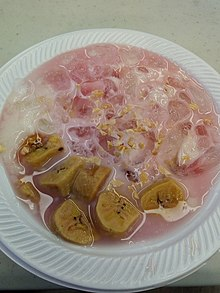

Kembali ke menu awal
Pallubutung

Pallu Butung adalah makanan khas Sulawesi Selatan, makanan ini sering dijadikan hidangan untuk berbuka puasa di saat bulan Ramadan.
Pallu Butung ini hampir mirip dengan Pisang Ijo.
Pallu Butung terbuat dari campuran tepung beras, santan, gula pasir, daun pandan, vanili dan garam yang kemudian sampai matang dan kental.
Lalu dimasukkan potongan-potongan pisang raja yang juga sudah masak lalu diaduk.
Pallu Butung dapat dihidangkan hangat-hangat, juga bisa dihidangkan dingin dengan menambah parutan es di atasnya.
Pallu Butung juga bisa ditambahkan sedikit sirup untuk menambah warna dan rasa manis.
Sumber: Wikipedia
Kembali ke menu awal